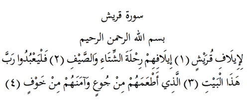

6

Kureyş Suresi
Anlamı: Er-Rahman, er-Rahim Allah’ın adıyla
Kureyş’e verdiğimiz ülfet için (1). Kış ve yaz seferlerindeki ülfetleri için (2). Onlar da bu beytin/Kabe’nin Rabbine kulluk etsinler (3) ki, onları açken doyuran o, korkuda iken güvende kılan o (4).
Açıklama: Kureyş, Hz. Peygamber’in de mensup olduğu, Mekke’nin en köklü kabilesidir.
Ülfet: Ünsiyet, huzur, kaynaşma, alışkanlık gibi anlamlara gelir. Buna göre, «Kureyş’e verdiğimiz ülfet için’ demek, ‘güven ve huzur içinde gidip gelmelerini sağladığımız için’ demektir.
«Kureyş Suresi» iniş sırasına göre 29.; Mushaf’taki sıralamaya göre ise 106. suredir. Mekke’de inmiştir.
Bazılarına göre bu sure bir önceki Fil Suresini tamamlar gibi bir sebep bağlacı ile (li-) başlar. Sanki «Fil ordusunu perişan ettik ki, Kureyşliler hayatlarında ülfet ve huzur bulsunlar. Kuzeye ve güneye yaptıkları ticari seferlerde rahata ve güvene kavuşsunlar». Denmiş gibidir. Çünkü onlar mevsimin şartlarına uygun olarak yazın kuzeye Rum diyarına, kışın da güneye Yemen’e ticari seferler yapıyorlardı. Ebrehe’nin fil ordusunun etkisiz kılınmasıyla güven ve huzur buldular. Taberî’ye göre ise bu bağlaç taaccup/ şaşkınlık anlamına gelmelidir. «Bakın hele şu Kureyşin haline! Biz onlara nimet verdik, onlar kadirbilmez oldular, neşe içinde yaşıyorlar», gibi bir anlama gelir. Ancak Taberî’nin bu anlamı seçmesinin gerekçeleri makul gözükmemektedir.